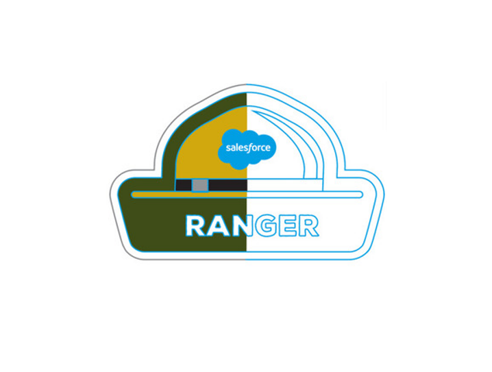

Mes Certifications
Les certifications ne sont pas synonymes de maitrise, néanmoins ils m’ont guidé et motiver à aquerir divers atouts qui me seront nécessaires durant ma vie professionnelle et personnelle.

Trailhead Ranger

Lighthouse
Proin gravida nibh vel velit auctor aliquet. Aenean sollicitudin, lorem quis bibendum auctor, nisi elit consequat ipsum, nec sagittis sem nibh id elit.
Web Development

Salad
Proin gravida nibh vel velit auctor aliquet. Aenean sollicitudin, lorem quis bibendum auctor, nisi elit consequat ipsum, nec sagittis sem nibh id elit.
Branding